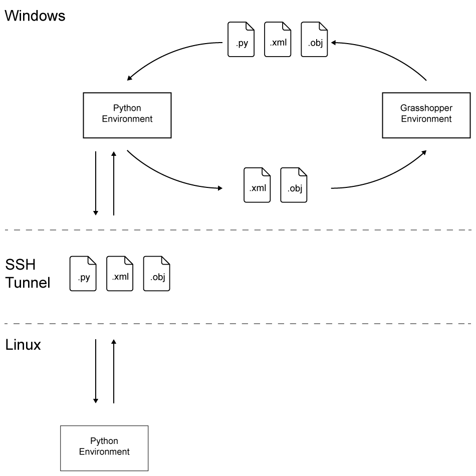
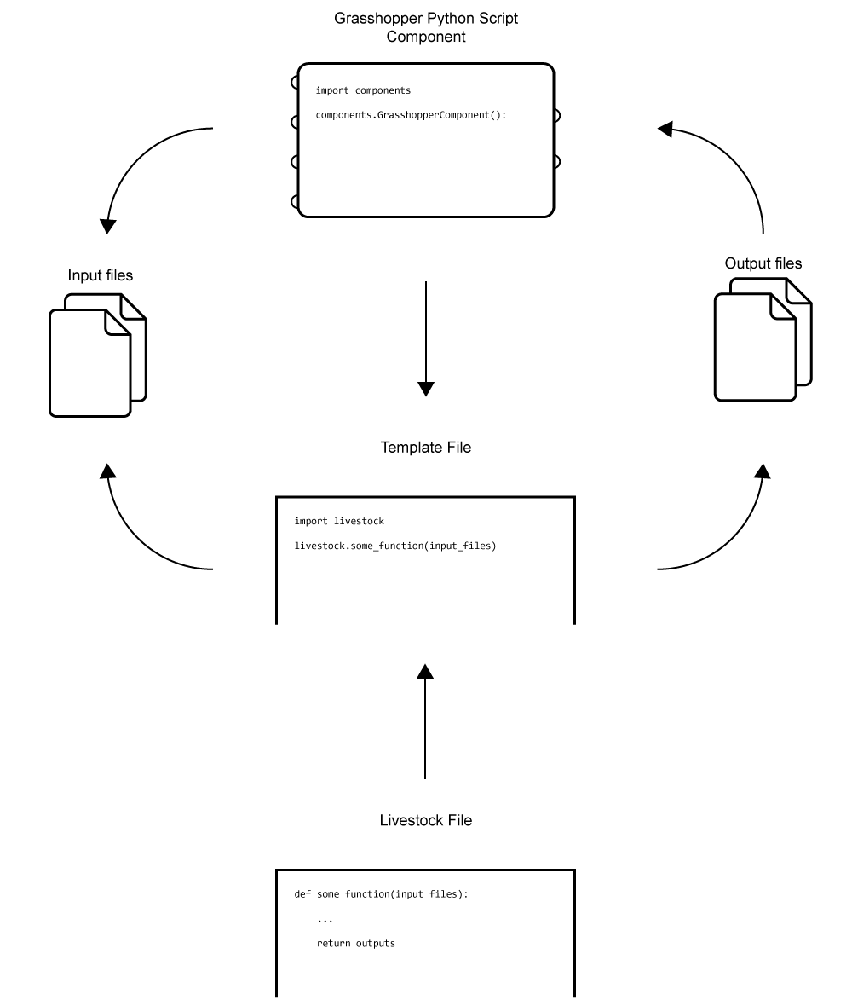

Livestock is an Open Source lightweight CPython package, linking IronPython in Rhino3d+Grasshopper3d and Revit+Dynamo to CPython. Originally created by Christian Kongsgaard and Kristoffer Negendahl. Livestock3D is allowing people "to extend the scripting/coding capabilities beyond IronPython by tunneling into the CPython ecosystem with the ambition to make faster and more open building/site performance analysis tools for Civil and Environmental Engineering disciplines."
Livestock is a project in continuous development by Civil engineering researchers and students from the Section of Building Design at DTU.
Why Use CPython?
The Grasshopper Python Script component runs IronPython, which is an implementation of Python for the .NET framework. IronPython comes as Python 2.7 and has been without development for some time. Standard Python, from here on named CPython, is well maintained and is at the time of this writing on version 3.6, although a beta version of 3.7 has been released. CPython has undergone a lot development that IronPython still has to catch up to, including a whole bunch of new features. Furthermore, are the packages on PyPI mainly targeting CPython and many cannot be used in IronPython. This means that packages such as NumPy, SciPy, Pandas and Matplotlib, among more than 130,000 others, can not be used. This decreases the usability of the IronPython as a general-purpose implementation of Python.
Grasshopper to CPython
In order to leave Grasshopper and utilize the full functionality of CPython, the Livestock Template Method is used. The method works by writing templates from the Grasshopper Python Script followed by spawning a CPython subprocess, which executes the template.
In the Grasshopper environment data are collected and organized and saved as a .xml or .txt file for information or .obj file for geometry. Together with the data files a Python file is written, which contains instructions on how to process the data. Two things will happen:
1) Python will execute the instruction in the Python file and save the results as .xml, .txt and, or .obj files, thereafter Grasshopper will read them. 2) The instructions in the Python file is to send the files to another computer for processing.

In that case two Python files are send from Grasshopper: one that tells Python to send on the files and one with instructions on how to process the files as in case 1. Python will establish a SSH connection (Secure Shell) to the remote computer, wherethrough the files will be send. The remote computer will execute the Python instruction file and the result files will be send back through the SSH connection, afterwards it will be closed. The local Python will then save the result files to the right place, where Grasshopper is able to read the files.
The reason for sending the files forward to remote processing is to reduce processing time, as most cases are quite computational heavy. Furthermore, it is freeing your work station, as it is not pinned down from the workload, while the computation is ongoing. This is desirable especially in a professional context.
Templates
The templates works as the link between Grasshopper and CPython. They are written by the Grasshopper component, where after Grasshopper spawns a subprocess, which makes CPython execute the template. The template itself is basically just a file, which imports the CPython library of Livestock and calls a function from it. The function call is then executed in pure CPython, enabling the user to take full advantage of it.

SSH Tunnel
The SSH functionality works like the template method. Livestock CMF Solver is the only component that is currently utilizing the SSH method. The component takes different inputs and has some different internal processing but the core functionality – point 3 and 4 from above – is still the same. With a minor change the SSH functionality can be implemented: When the files are written, not only the data files and the template file are written but also a SSH template and a SSH input file. The SSH template file is similar to any other template file of this thesis; it has a single function call – ssh_connection(). ssh_connection reads the data in the SSH input file and opens the SSH tunnel, transfers the files, makes the remote machine execute the template file, and transfers the results back and cleans up the remote folder. The SSH input file contains all the information needed for this and only a few lines of information are needed:
- IP address of the remote machine.
- Port where through the connection should be made.
- Username and password for the remote machine.
- Filenames of the files that should be transferred i.e. the data files and the template.
- Filename of the file which should be run of the remote machine i.e. the template.
- Filenames of what files should be returned i.e. the result files.
When the results are back the SSH connection will be closed and the SSH template will be terminated and the CPython part of the Livestock CMF Solve component will be finished.